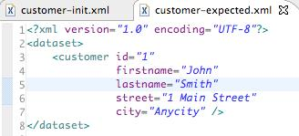

Pruebas con DBUnit
Introducción
El correcto acceso a datos es fundamental en cualquier aplicación. La complejidad de algunos modelos de datos crea la necesidad de pruebas sistemáticas de la capa de datos. Por un lado se necesita probar que la capa de acceso a datos genera el estado correcto en la base de datos (BD). Por otro lado también se necesita probar que ante determinado estado de la BD el código Java se comporta de la manera esperada.
Sistematizar estas pruebas requiere una manera sencilla de reestablecer el estado de la base de datos. De otra manera surgirían problemas cada vez que un test falle y deje la BD en un estado inconsistente para los siguientes tests.
DbUnit
DbUnit es un framework de código abierto que fue creado por Manuel Laflamme. Está basado en JUnit, de hecho sus clases extienden el comportamiento de las clases de JUnit. Eso permite la total integración con el resto de pruebas en JUnit.
DbUnit nos permite gestionar el estado de una BD durante las pruebas unitarias y de integración. Constituye la alternativa a la creación de clases stub y mocks para controlar las dependencias externas.
Ciclo de vida
El ciclo de vida de las pruebas con DbUnit es el siguiente:
1. Eliminar el estado previo de la BD resultante de pruebas anteriores (en lugar de restaurarla tras cada test).
2. Cargar los datos necesarios para las pruebas de la BD (sólo los necesarios para cada test).
3. Utilizar los métodos de la librería DbUnit en las aserciones para realizar el test.
Características de DbUnit
DbUnit nos permite los problemas que surgen si el último caso de prueba ha dejado la base de datos inconsistente.
DbUnit puede trabajar con conjuntos de datos grandes.
Permite verificar que el contenido de la base de datos es igual a determinado conjunto de datos esperado, a nivel de fichero, a nivel de consulta o bien a nivel de tabla.
Nos proporciona un mecanismo basado en XML para cargar los datos en la BD y para exportarlos desde la BD.
Proporciona una forma de aislar los experimentos en distintos casos de prueba individuales, uno por cada operación.
Prácticas recomendadas
La documentación de DbUnit establece una serie de pautas como prácticas recomendadas o prácticas adecuadas (best practices).
- Usar una instancia de la BD por cada desarrollador. Así se evitan interferencias entre ellos.
- Programar las pruebas de tal manera que no haya que restaurar el estado de la base de datos tras el test. No pasa nada si la base de datos se queda en un estado diferente tras el test. Dejarlo puede ayudar para encontrar el fallo de determinada prueba. Lo importante es que la base de datos se pone en un estado conocido antes de cada test.
- Usar múltiples conjuntos de datos pequeños en lugar de uno grande. Cada prueba necesita un conjunto de tablas y de registros, no necesariamente toda la base de datos.
- Inicializar los datos comunes sólo una vez para todos los tests. Si hay datos que sólo son de lectura, no tenemos por qué tocarlos si nos aseguramos de que las pruebas no los modifican.
Estrategias de conexión recomendadas.
- Como cliente remoto con la clase DatabaseTestCase.
- A través del pool de conexiones de un servidor de aplicaciones, con IDataBaseConnection o con JndiBasedDBTestCase.
Clases e interfaces
DbUnit es un conjunto de clases, algunas de las cuáles heredan de clases de JUnit. DbUnit tiene una serie de dependencias con las siguientes librerías (bibliotecas):
- JUnit: framework base para las pruebas
- Jakarta Commons IO: utilidades de entrada y salida
- Slf4j: frontend para frameworks de logging
Nosotros utilizaremos las versiones JUnit 4, Commons IO 1.4 y Slf4j 1.6. Lógicamente también es necesaria la librería para el acceso a la base de datos, pero esto ya no es una dependencia de DbUnit, sino de nuestro proyecto. En nuestro caso utilizaremos el conector JDBC de MySQL.
DBTestCase hereda de la clase TestCase de JUnit y proporciona métodos para inicializar y restaurar la BD antes y después de cada test. Utiliza la interfaz IDatabaseTester para conectar con la BD. A partir de la versión 2.2 de DbUnit se ha pasado a la alternativa de utilizar directamente el IDatabaseTester, como se verá en los ejemplos.
IDatabaseTester devuelve conexiones a la base de datos, del tipo IDatabaseConnection. La implementación que nosotros vamos a utilizar es la de JDBC, JdbcDatabaseTester. Tiene métodos onSetUp(), setSetUpOperation(op), onTearDown(), setTearDownOperation(op), getConnection(), entre otros.
IDatabaseConnection es la interfaz a la conexión con la base de datos y cuenta con métodos para crear un conjunto de datos createDataSet(), crear una lista concreta de tablas, createDataSet(listaTablas), crear una tabla extraída de la base de datos, createTable(tabla), crear una tabla con el resultado de una query sobre la BD con createQueryTable(tabla, sql), y otros métodos como getConnection(), getConfig(), getRow().
La interfaz IDataSet representa una colección de tablas y se utiliza para situar la BD en un estado determinado, así como para comparar el estado actual de la BD con el estado esperado. Dos implementaciones son QueryDataSet y FlatXmlDataSet. Esta última implementación sirve para importar y exportar conjuntos de datos a XML en un formato como el siguiente:
<?xml version='1.0' encoding='UTF-8'?> <dataset> <TEST_TABLE COL0="row 0 col 0" COL1="row 0 col 1" COL2="row 0 col 2"/> <TEST_TABLE COL1="row 1 col 1"/> <SECOND_TABLE COL0="row 0 col 0" COL1="row 0 col 1" /> <EMPTY_TABLE/> </dataset>
Por último otra clase importante es la Assertion que define los métodos estáticos para realizar las comparaciones: assertEquals(IDataSet, IDataSet) y assertEquals(ITable, ITable)
Estructura en un proyecto
La estructura del proyecto es similar a la que podemos usar con JUnit, aislando las pruebas en una carpeta separada test.
Con DbUnit también necesitaremos una carpeta de recursos resources donde guardar los recursos XML. Éstos consistirán en ficheros independientes para cada prueba, tanto para la inicialización de la BD, como para el estado esperado de la BD tras cada prueba:

La estructura básica de la clase que contiene un conjunto de pruebas consiste en implementar los métodos que se ejecutan antes de cada test, después, y los tests en sí. También habría que incluir las variables de instancia del DAO y del IDatabaseTester:
public class TestMiJDBCDAO {
private JDBCDAO dao;
private IDatabaseTester databaseTester;
@Before
public void setUp() throws Exception {
}
@After
public void tearDown() throws Exception {
}
@Test
public void test1DelAdd() throws Exception {
}
...
}
Obtener la instancia al DAO se podría hacer o bien antes de cada test, o bien antes de todos los tests, con una función anotada como @BeforeCase. Antes de cada prueba también hay que configurar el IDatabaseTester, en este caso para acceder por JDBC, e inicializar el conjunto de datos a partir del recurso XML apropiado. Finalmente hay que llamar la operación databaseTester.onSetup() que llama a la operación por defecto de inicio de test de la clase DatabaseOperation. Ésta define el contrato de la interfaz para operaciones realizadas en la base de datos.
@Before
public void setUp() throws Exception {
//Obtener instancia del DAO que testeamos
pdao = new JDBCPeliculaDAO();
//Acceder a la base de datos
databaseTester = new JdbcDatabaseTester("com.mysql.jdbc.Driver",
"jdbc:mysql://localhost/databasename", "username", "password");
//Inicializar el dataset en la BD
FlatXmlDataSetBuilder builder = new FlatXmlDataSetBuilder();
IDataSet dataSet = builder.build(
this.getClass().getResourceAsStream("/db-init.xml"));
databaseTester.setDataSet(dataSet);
//Llamar a la operación por defecto setUpOperation
databaseTester.onSetup();
}
Similarmente llamaremos a onTearDown() después de cada prueba:
@After
public void tearDown() throws Exception {
databaseTester.onTearDown();
}
La prueba se aísla en un método en el que realizamos la operación a través del DAO, conectamos con la base de datos a través de IDatabaseConnection, creamos el dataset de las tablas implicadas en el test, y lo escribimos en un archivo en formato XML. Obtenemos los datos esperados de otro archivo XML y los comparamos. Deben ser idénticos para que la prueba tenga éxito.
@Test
public void test1() throws Exception {
//Realizar la operación con el JDBC DAO
...
// Conectar a la base de datos MySQL
IDatabaseConnection connection = databaseTester.getConnection();
DatabaseConfig dbconfig = connection.getConfig();
dbconfig.setProperty(
"http://www.dbunit.org/properties/datatypeFactory",
new MySqlDataTypeFactory());
// Crear el DataSet de la base de datos MySQL
QueryDataSet partialDataSet = new QueryDataSet(connection);
partialDataSet.addTable("tabla1");
partialDataSet.addTable("tabla2");
partialDataSet.addTable("tabla3");
// Escribir el DataSet en XML para después compararlo con el esperado
File outputFile = new File("db-output.xml");
FlatXmlDataSet.write(partialDataSet, new FileOutputStream(outputFile));
// Obtener los datos esperados del XML
URL url = IDatabaseTester.class.getResource("/db-expected1.xml");
Assert.assertNotNull(url);
File inputFile = new File(url.getPath());
// Comparar los ficheros XML
Assert.assertEquals(FileUtils.readFileToString(inputFile, "UTF8"),
FileUtils.readFileToString(outputFile, "UTF8"));
}
Por último, las pruebas se ejecutan a través de JUnit:
Se puede probar el siguiente ejemplo de proyecto con DbUnit en Eclipse: DBUnitExample.zip.